Peir-Ru Wang (Louis)

Experience:
| Researcher | Pure-Perspective Research Group |
| 2024.10- |
| Postdoc | National Tsing Hua University | STM Physics in \(TaS_2\) | 2024.03-2024.09 |
Education
| Ph.D | Materials Science | National Tsing Hua University |
| 2016.09-2024.01 |
| B.S | Power Mechanical Engineering (Major) Physics (Minor) | National Tsing Hua University |
| 2012.09-2016.06 |
✉Corresponding Author
\( ^2 \) Pair-Ru Wang, Zi-Yang Zheng, Hsiao-Wei Chiang, Continuously Variable Transmission, US 10030745 B2, TW I580876
\( ^3 \) Peir-Ru Wang, Zi-Yang Zheng, Hsiao-Wei Chiang, Low Speed Wind Tunnel Study of Variable Tandem Wing Aircraft Design: Earlier-on Experiment and Study, A.A.S.R.C Conference (2014)
Progress in Postdoc Works
Recently, I have been focusing on the study of 2D quantum materials, specifically 2D Transition Metal Dichalcogenides (TMDs), including \(TaS_2\), \(NbS_2\), and \(VS_2\). These Van der Waals layered materials exhibit promising properties such as superconductivity, charge density waves, and Moiré phenomena.
During my Ph.D., I studied superconducting bulk materials, and now I am gaining more experience in the physics of few-layer materials. TMDs provide an excellent platform for this research, and I am also advancing my skills in scanning tunneling microscopy (STM). Recently, I have been using STM to explore CVD-grown \(TaS_2\) with spiral structures.
{kind=link}
{kind=link}
{kind=link}
{kind=link}
▲ I have learned to use standard Si(111) to calibrate STM and have experience in maintaining UNISOKU's STM USM-1400. (Click to enlarge)
Theory of Critical Coupling Constants
DOI:10.1038/s41598-023-33809-5
 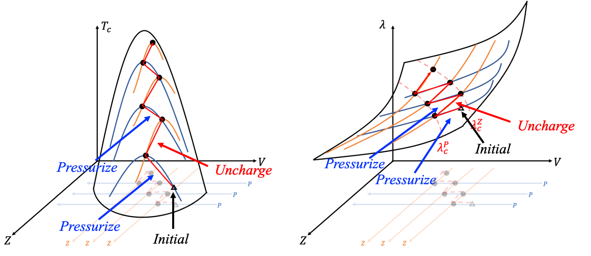
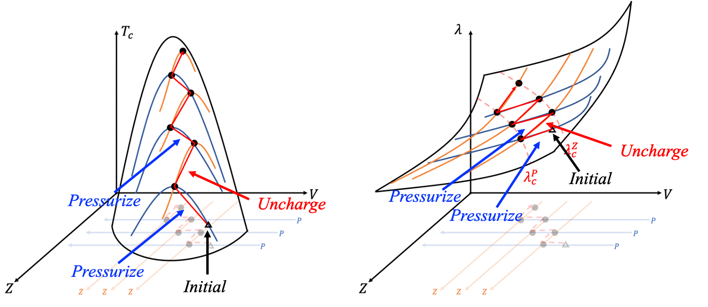{kind=link}
These critical coupling constants are consistent with experimental observations and quantitatively classify superconductivity into three categories: weak (\(\lambda_c < \lambda_c^P\)) , intermediate (\(\lambda_c^P < \lambda_c^\Omega\)) , and strong coupling (\(\lambda_c > \lambda_c^\Omega\)) . Each category corresponds to different enhancement strategies. More precisely, the enhancement strategies for weak and strong coupling regions are opposite, but both inevitably bring superconductivity into the intermediate coupling region. For superconductors in the intermediate coupling region, general zigzag strategies further enhance the superconductivity.
The CVT Invention Patents
This self-adaptable, positive motion continuously variable transmission (CVT) is able to transmit power by way of engagement, such that the coupling between the power transmission mechanism and the conical disk is more stable than the conventional friction CVT. Traditional CVTs use chain-based friction transmission to achieve continuous power transmission by adjusting the spacing of the pulley discs. However, friction transmission efficiency is lower, and it cannot achieve high torque output. The patent includes two types of positive motion transmission designs: chain-based and ring-based. Thus, the continuously variable transmission is competitive in high torsion application.
• US Invention Patent 10030745 B2• Taiwan Invention Patent I580876, Licence
 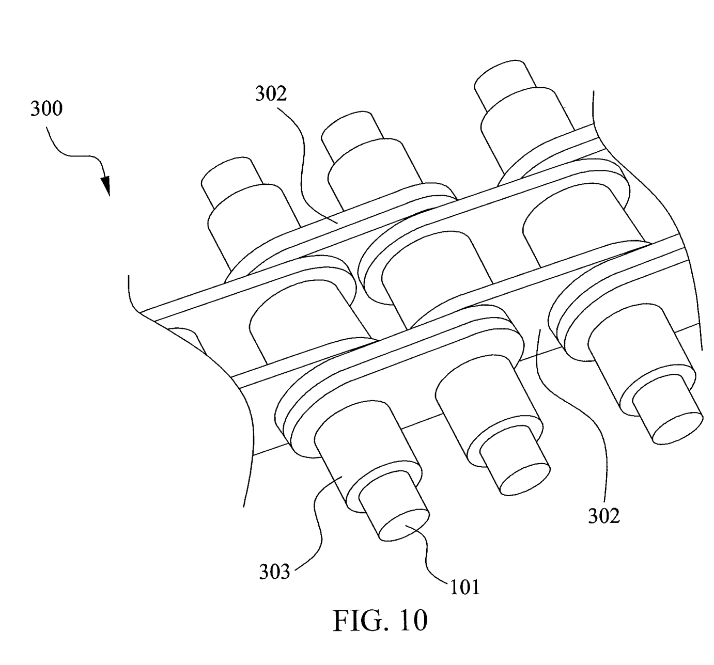
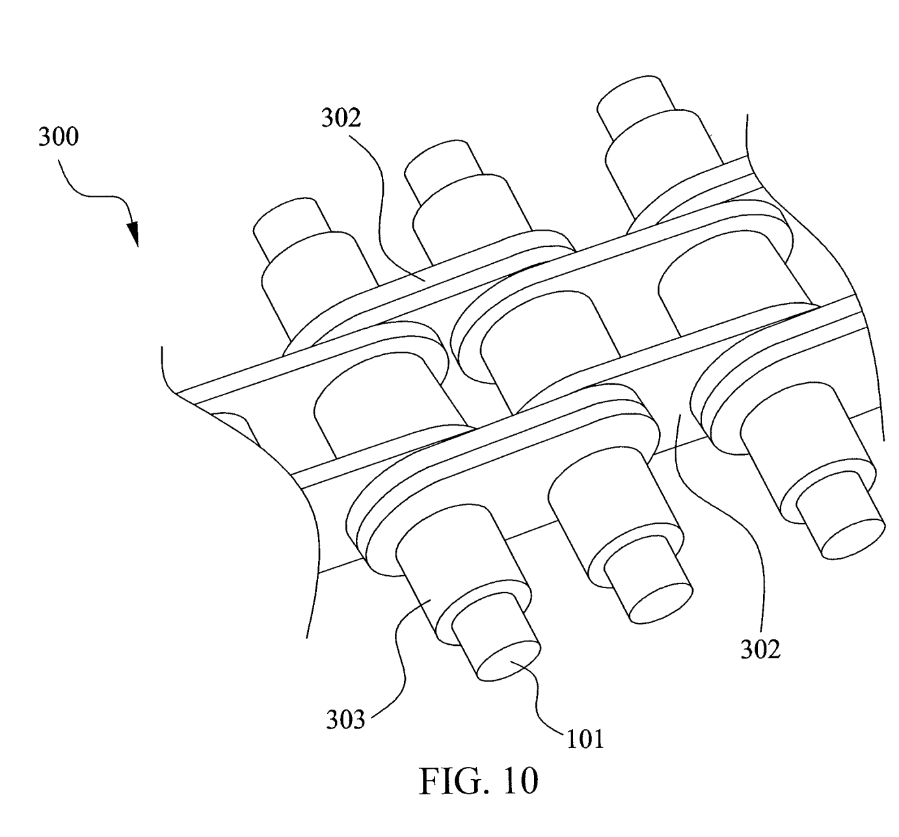{kind=link}
Laboratory Automation
The resistivity-temperature \(\rho\)‚àíùëá measurement automation can measure 15 oxide or alloy pallets simultaneously with the temperature range from 70K to 400K. The range of resistivity covers ùüèùùÅùõÄ‚àôùíÑùíé to ùüèùëÆùú¥‚àôùíÑùíé. LabVIEW codes control and collect information from the instruments through GPIB. Instruments include Keithley 237 and 617 meters, HP34420A meter, Stanford Research Systems SR830 Lock-in, and Cryo-Con 32B temperature controller. The modular design of the measurement circuit allows for easy expansion and routine maintenance.

 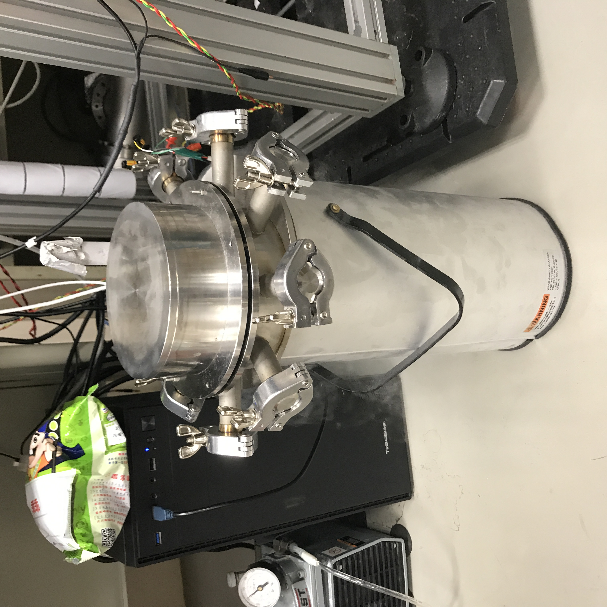
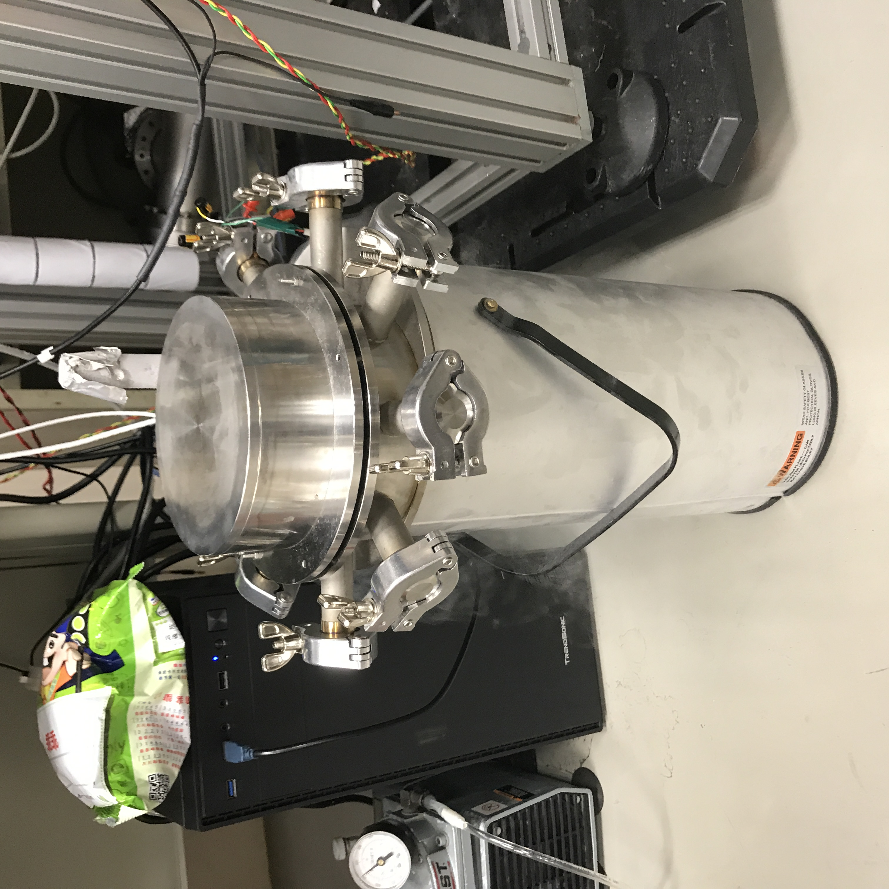{kind=link}
 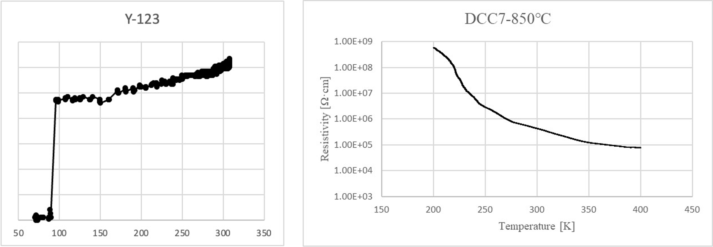
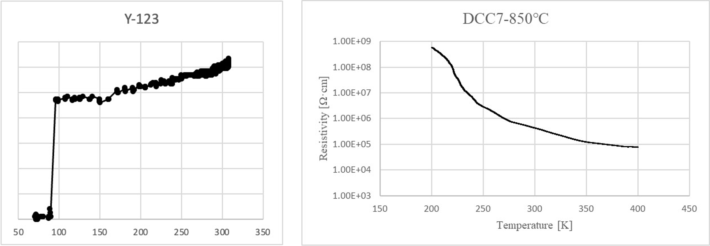{kind=link}
Instruments I have integrated:
| Temperature Controller | Cryo-Con 32B * 2 |
| Meters | HP 34420A Keithley 237 & 617 |
| Lock-In | SR830 * 4 |
The chemical powder mixture preparation automation can prepare 96 different mixtures within 14 hours, which is 6 times faster than manual preparation. The machine offers 40 types of powder for selections. I designed components using AutoCAD and printed them with Ender-3S 3D printer. I also soldered electronic components onto circuit boards to control the step motors. 12 step motors controlled the XY motions of the powder boxes and the empty bottles. The weight of powder mixture is measured by Shimadzu ATY-124 balance. The control program integrated LabVIEW, Arduino, and VBA. This machine can weigh the powder according to the user's experimental design and record any discrepancies.
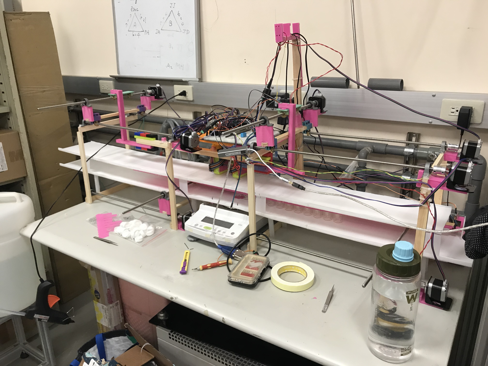 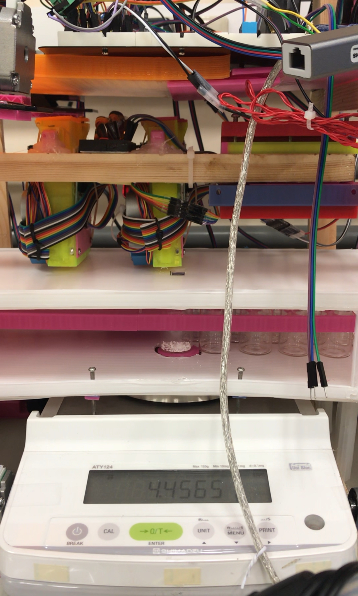 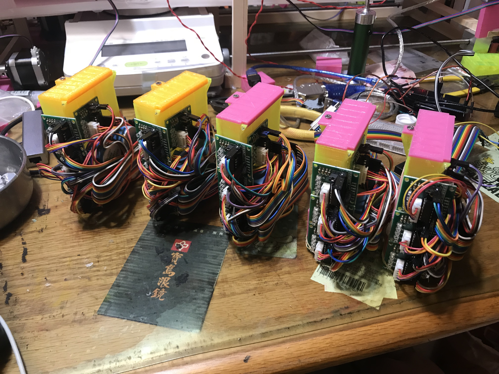{kind=link}
{kind=link}
{kind=link}
Outstanding TA Award in Physics
I am the teaching assistant in statistical and thermal physics I & II, general relativity I & II, theoretical mechanics II, fluid dynamics, classical mechanics, general physics I & II, etc. I was recognized with the NTHU Outstanding Teaching Assistant Award in 2019 due to dedicated teaching efforts. My favorite teaching topic is the "Principle of Least Action." You can refer to the lecture notes I wrote.
\(\to\)Tutorial Website (Chinese Version)
\(\to\)Tutorial Website (English Version)
\(\to\)Lecture Note-Principle of Least Action(2019)
\(\to\)Lecture Note-Principle of Least Action(2018)
{kind=link}
{kind=link}
▲I was teaching the variational principle to obtain Maxwell's equations.
Recent Studies and Research Work
Recently, I established a small education and research group, Pure-Perspective Research Group, dedicated to advancing knowledge in superconducting (SC) qubit physics. My work involves studying the Hamiltonian of SC control circuits and employing Python to simulate and visualize qubit state evolution on the Bloch sphere. Our current research focuses on the mathematical frameworks of Lie groups and gauge theory, with an emphasis on their applications in qubit control and topological physics.

▲Simulation of ideal and detuned \(\frac{\pi}{2}-\frac{\pi}{2}\) controls, i.e., the Ramsey experiment.
Additionally, we explored the high-entropy counterparts of \(YBCO\) and discovered that these high-entropy counterparts exhibit greater tolerance to doping. (\( \to\)Recent progress in high entropy \(YBCO\) )


▲The high-entropy counterparts of \(YBCO\) and discovered that these high-entropy counterparts exhibit greater tolerance to doping, as confirmed by XRD analysis of their structural changes.
Moreover, I attended the Quantum Builders Summit Taiwan 2025 (2025.01.13), hosted by Quantum Machines, where I gained valuable insights into the latest advancements in quantum computing. I also had the opportunity to observe the operation of the OPX1000, further deepening my understanding of cutting-edge quantum control systems.


▲ I also had the opportunity to observe the operation of the Quantum Machines' OPX1000 as it demonstrated the pulse sequence for the Rabi experiment.
Back to home